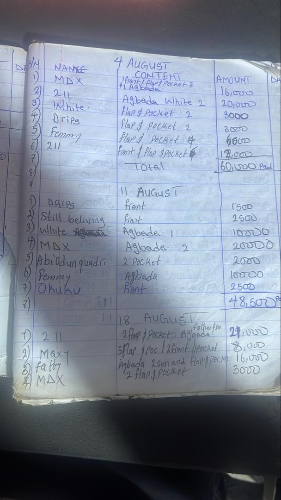

The Problem
At Olamide Craft in Osogbo, Osun State, Olamide kept his fashion business’s records in notebooks. Every order. Every payment. Every measurement. Pen on paper. At the end of each year, he'd close the book and start a new one, and the old book would go straight into the drawer. The records were written, but never read.
Which meant the business was running on memory and guesswork. The questions that actually decide a small studio's direction had no answer:
- How much did I make this month? This year?
- Can I afford to bring on a part-time tailor? A full-time one?
- When is my busiest week? My slowest stretch?
He was working hard. He just couldn't see his own work.
The Solution
He heard about BeeHi Analytics through someone else in Osun. Over two weeks of working sessions with our team, the notebook entries were translated into a structured Google Sheet, and that sheet was wired to a custom-built dashboard.
Now every order, every payment, every customer lives in one place. The dashboard refreshes automatically every morning at 8 AM — before he's opened the shop, the numbers are waiting for him.

The Insight
Today, Olamide checks his dashboard before he steps into the studio. In one screen he sees:
- Which styles people are ordering most The cap-and-top combos move at much higher volume than full agbada sets, so he keeps that fabric in deeper stock and quotes turnaround times he can actually hit.
- What's still owed to him Pending balances from incomplete jobs are listed by customer, sorted by how long they've been sitting there. He messages those customers on WhatsApp directly from the list.
- Per-order profit A ₦30,000 advance on an outfit that cost him ₦15,000 in materials is ₦15,000 in his pocket. Now he can see it for every order, not just the ones he remembers.
Same hard work. Different visibility. Different decisions.